Details can be found in this link: https://inst.eecs.berkeley.edu/~cs180/fa24/hw/proj3/
This project is about the computer vision and image processing tasks that have and can be carried out on human faces, particularly the task of face warping, face morphing, and face averaging. We look at the importance of facial landmarks or corresponding points in the face to carry out these tasks. The project can be divided into five parts: Defining Correspondences, Computing the "Mid-way Face", Creating a Morphing Sequence, Computing the "Mean face" of a population, and creating Caricatures. To make this project more fun, I have used an image of myself for many of the tasks. At the end, I warp my face, as well as create a morph sequence of it, and use it in relation to other faces in online datasets. Specifically, I produce a "morph" animation of my face into someone else's face, compute the mean of a population of faces and extrapolate from a population mean to create a caricature of myself.
The first thing I do is I create a tool to define point landmarks in an image. The reason we need these landmarks is that we need to know which points correspond to things like the eyes, nose, mouth, etc. in order to carry out the tasks of face warping, morphing, and averaging. The goal is to use these points in relation to other faces to carry out these tasks. This ends up being a tool where you just click on the image to define the points, and the order of the points dictates the order of the points in the other images. With the goal of morphing one face into another, I start with aligning the two face images, and then defining the corresponding points. Given the goal, the number of points is the same for both images, and the more points you define, the more accurate the morphing will be.
Since I really like an image of Derek, which is an image I worked with in Project 2, I decided to use that image for the morphing task. I defined the points on my face and Derek's face, and then used the points to warp my face into Derek's face. The result was a warped image of my face into Derek's face.
| Derek | Brayton | |
|---|---|---|
| Original | 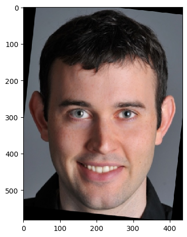 | 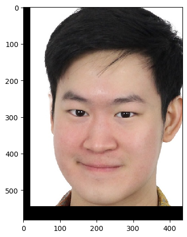 |
| Corresponding Points | 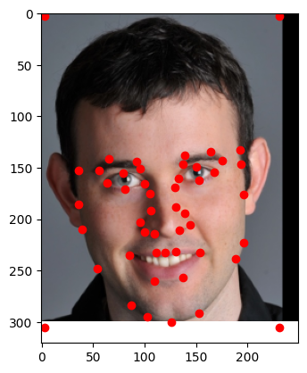 | 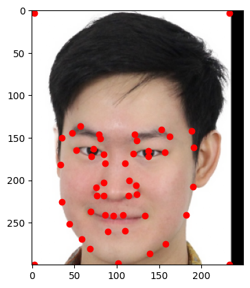 |
Then, we create a triangulation of the face via the Delaunay triangulation. This is done by creating a mesh of triangles that connect the points. This is done so that we can warp the face into the other face.
| Derek | Brayton |
|---|---|
| 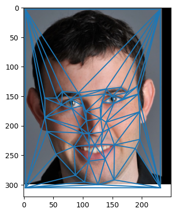 | |
Soon, we will warp Derek's face into mine. This means we are going to interpolate between the two faces over time. But let's try to understand what this means for a single intermediate face. Our goal for this part is to show the intermediate face in the middle, that is, the mid-way face. If we generalize the problem, we can say that we are trying to find a `t`-way face, where `t` is the parameter that determines the weight of the two faces. The mid-way face is the face that is exactly in the middle of the two faces, where `t = 0.5`. There are 2 parts to this: computing the `t`-way shape (triangulation) and the `t`-way texture (color).
Let's think of how to compute the `t`-way shape. We can do this by averaging the corresponding points of the two faces:
V_t = (1-t)V_1 + tV_2
where V_t is the `t`-way shape, V_1 is the shape of the first face, and V_2 is the shape of the second face.
The triangulation can then remain the same to give us the `t`-way face's triangulation. So if we set `t = 0.5`, we get the mid-way shape.
Next, we need to compute the `t`-way texture. This is actually quite tough and has to do with inverse warping. Our rationale is as follows: For each pixel in the mid-way face, we want to find a color which is corresponding from Derek's and my face. We do this using the help of the spatial triangulation. For each triangle in the midway face, we find the corresponding triangle in Derek's and my face via affine transformation. These points are often not integers, so we look for the interpolated values at these floating points. A visualization of triangle warping is shown below:
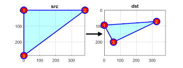So we first compute the affine transformation from a triangle in the midway face x1, y1, x2, y2, x3, y3 to a triangle in Derek's face x1', y1', x2', y2', x3', y3' via the following equations:
[x1 y1 1 0 0 0] [w1] [x1']
[0 0 0 x1 y1 1] [w2] [y1']
[x2 y2 1 0 0 0] [w3] = [x2']
[0 0 0 x2 y2 1] * [w4] [y2']
[x3 y3 1 0 0 0] [w5] [x3']
[0 0 0 x3 y3 1] [w6] [y3']
where xi' = xi * w1 + yi * w2 + w3 and yi' = xi * w4 + yi * w5 + w6
Then, we can get 3 vectors: point coordinates of each pixel of each triangle in the midway face denoted by x, y , the corresponding interpolated colors of each pixel of each triangle in Derek's face denoted by col, , and the prior but for my face denoted by col'. Then we cross-dissolve the two colors to get the final color of the pixel in the midway face:
col_t = (1-t)col + t * col'
where `t = 0.5` for the mid-way face, and `col_t` is the final color of the pixel in the midway face.
This results in the mid-way face:
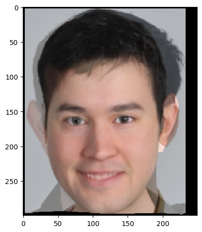Notice the little artifacts in the ears, the collars, and the hair. This is due to the fact that the images are not perfectly aligned, and the triangulation is not perfect. This can be fixed with more accurate points, more landmarks, and more similarities in the images. However, it is already quite visible that the face is a reasonable combination of Derek and me.
We can now make a morph sequence by interpolating between the two faces over time. This is done by computing the `t`-way shape and texture for each frame in the morph sequence. I created 45 frames where each frame is `t = 1/45` away from the other.
We can then combine these frames to create a gif (30 fps) of the morph sequence. Here is the gif:
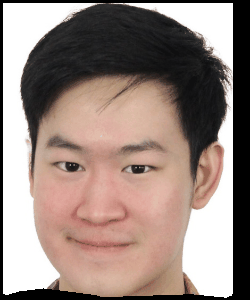Now we can use our well defined morph task to compute the mean face of a population. Let's first consider why we need a morph. I have taken a sample of 200 faces from a population of non-smiling people from the FEI database. The goal is to compute the "average" face of this population. Since these images are aligned, one thought would be to just compute the average of the pixel values of each image! However, this ends up with a suboptimal result. Here is the image:
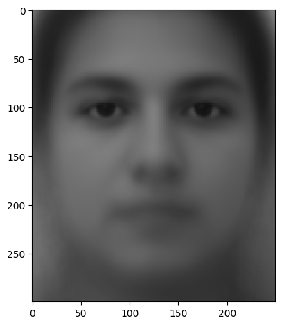This is not a good representation of the average face. This is because the average of the pixel values does not take into account the facial features. So we need to first morph the faces into some intermediate shape, which is best if it's just the triangulation of the mean corresponding points! This triangulation looks like this:
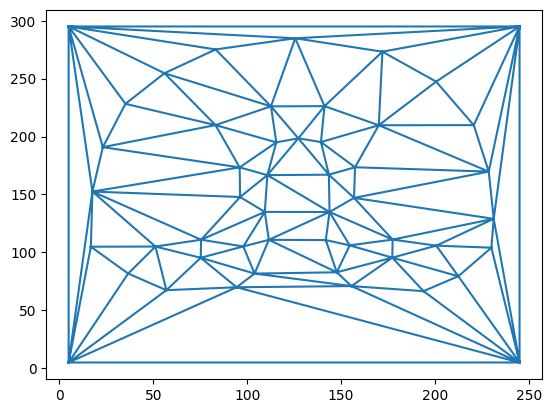Then we can compute the mean face by averaging the pixel values of the morphed faces. Here is an example of some faces being morphed into the mean shape:
| Original | Morphed |
|---|---|
| 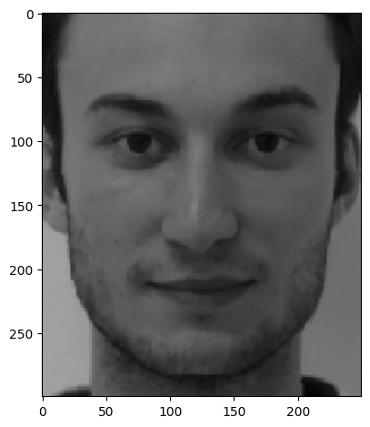 | 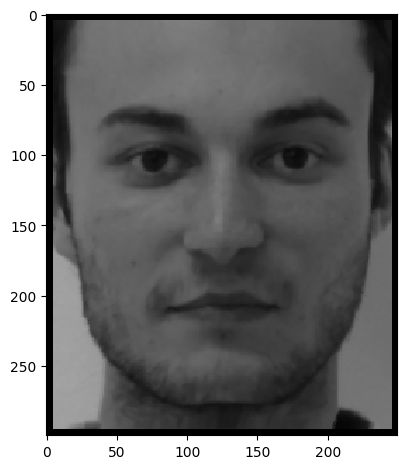 |
| 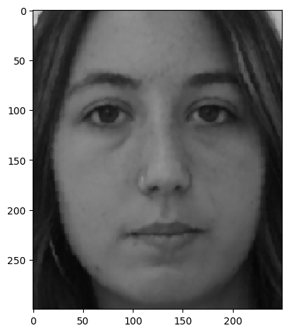 | 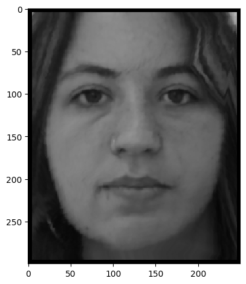 |
| 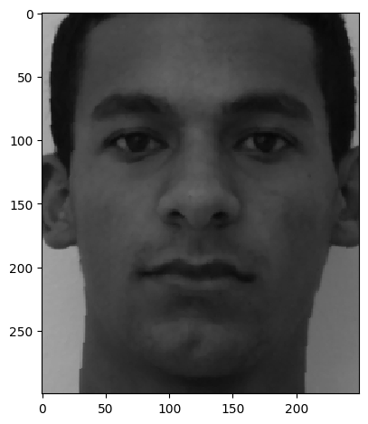 | 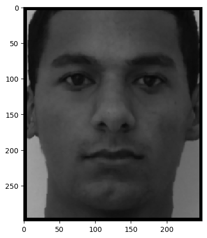 |
| 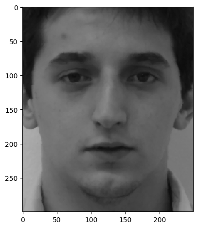 | 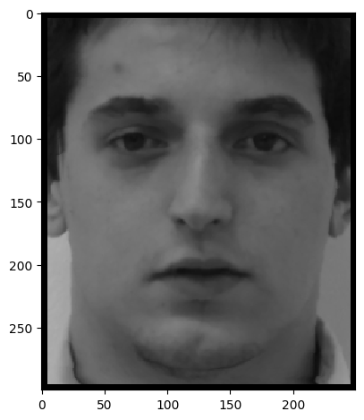 |
| 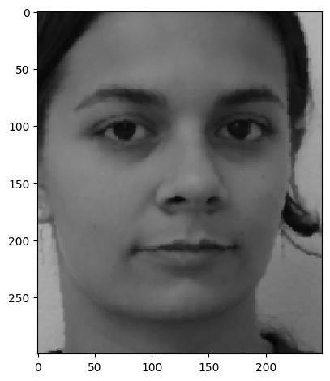 | 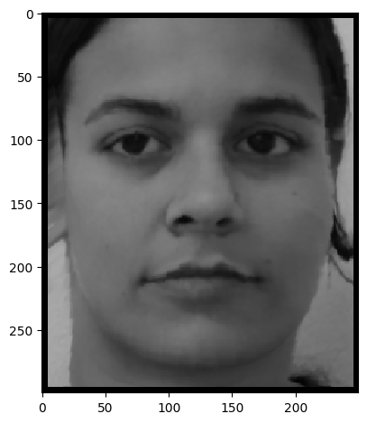 |
Notice the similarities in the morphed faces. This is because the faces are morphed into the mean shape. Now we can compute the mean face by averaging the pixel values of the morphed faces. Here is the mean face of the population:
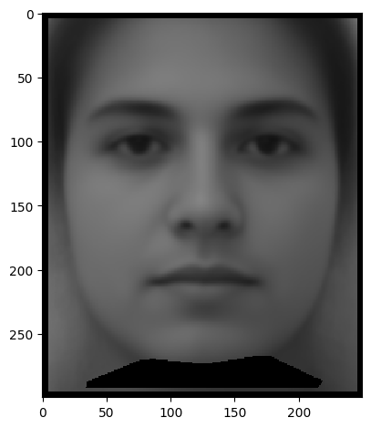Notice how the mean face is a more accurate representation of the average face of the population and has more defined features with less noise. This is because the faces are roughly of the same shape after morphing.
We can also make my face into the mean shape of the population and vice versa. First, I would have had to edit the image of my face to match the dimensions of the mean shape face, and then creating a different set of corresponding points of my face which matches the average face (actually, I had used the same correspondences from the beginning). Here is the result:
| My Face Shape | Average Face Shape |
|---|---|
 |
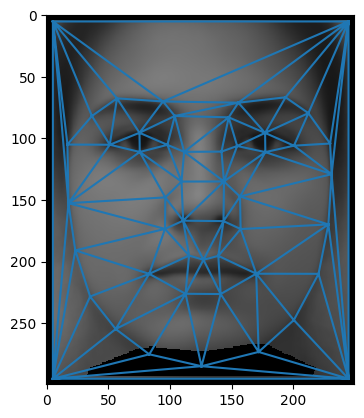 |
| My Face Morphed to Average Face Shape | Average Face Morphed to My Face Shape |
|---|---|
| 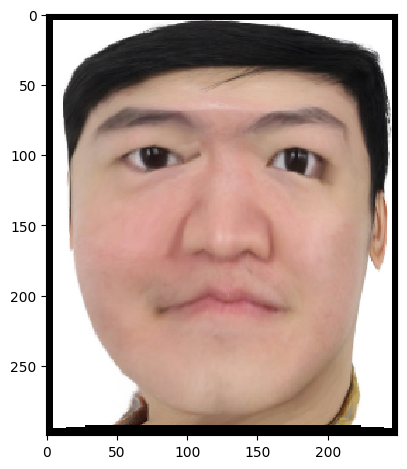 | 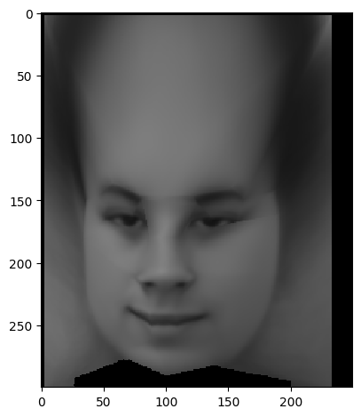 |
Ignore the weird foreheads! The corresponding points do not handle the forehead shapes, which is why the morphing doesn't account for it. The main observation is that the images in the inner triangulation, including the eyes, nose, and mouth, are morphed quite well. In the image where my face is morphed to the average face, the eyes, nose, and mouth are quite similar to the average face and I am no longer smiling. In the image where the average face is morphed to my face, the eyes, nose, and mouth are quite similar to my face and the average face is smiling. I also look significantly more like an average person in the first image :(
It's useful to think of images as points in a high-dimensional space. What we were doing when we morphed faces was interpolating between two points in this space. But what if we wanted to extrapolate from a point in this space? This means taking a `t` value that is not between 0 and 1. We would get a strange face that is somehow related to the original face but is not a real face. This is the idea behind caricatures.
Here is a caricature of myself, where I take an image of me, an image of the mean face, and extrapolate with `t = -0.5`:
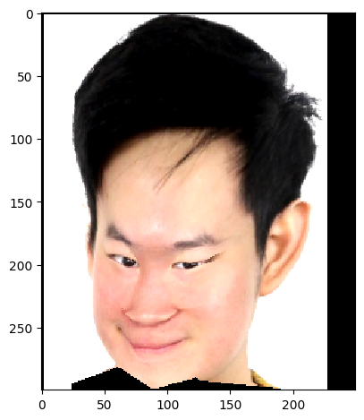Notice how the face is a caricature of myself. Again, we should ignore the forehead since it is not really accounted for in the dataset's triangulation. The eyes, nose, and mouth are exaggerated, and the face is quite different from my original face. This is because we are extrapolating from the mean face.
Another interpretation of what we have been doing when morphing my face into the average face is that we are changing the smile of the face. This is because the average face is an average of non-smiling faces. So we can think of the morphing as changing the smile of the face. Let's take a look at this again:
| My face | Me not smiling |
|---|---|
Notice how the smile is removed from my face in the morphed image.
Now, I also try this on my good friend Derek. Here is the result:
| Derek | Derek not smiling |
|---|---|
 |
Derek's large smile has kind of disappeared a little bit. Ignore the weird forehead again.
This project was a lot of fun and I learned a lot about facial landmarks, face warping, morphing, and averaging. I also learned about the importance of triangulation and how it can be used to morph faces. I also learned about the concept of caricatures and how they can be created by extrapolating from the mean face. I also learned about the concept of making a face more like a certain subpopulation by morphing it into the mean face of that subpopulation. This project was a great way to learn about computer vision, computer graphics, and image processing tasks that can be carried out on human faces.